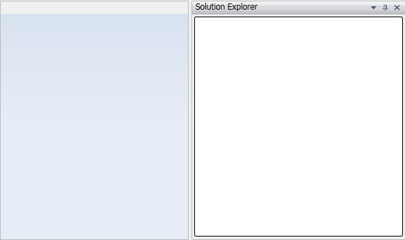

This topic gives the step by step procedure to dock a control using DockingManager through C#.
1. To dock a control using DockingManager, you need to add following Syncfusion assemblies as reference:
2. Syncfusion.DockingManager.Silverlight
3. Syncfusion.Shared.Silverlight
4. Now include the namespace in the C# file:
|
using Syncfusion.Windows.Tools.Controls; |
5. Now to dock a control, you have to create an instance for DockingManager and add the controls to its collection. You have to specify the DockState, position of the control using SideInDockedMode property and the Caption text for the docked window using Header property.
|
using System.Collections.Generic; using System.Windows; using System.Windows.Controls; using Syncfusion.Windows.Tools.Controls; using Syncfusion.Windows.Shared;
namespace Sample { public partial class MainPage : UserControl { public MainPage() { InitializeComponent(); //Creating DockingManager instance DockingManager dockingManager = new DockingManager(); //Creating TreeView instance TreeView treeView = new TreeView(); //Setting the position where treeView should be docked DockingManager.SetSideInDockedMode(treeView, Syncfusion.Windows.Tools.Controls.Dock.Right); //Setting the header text for treeView DockingManager.SetHeader(treeView, "SolutionExplorer"); DockingManager.SetDockState(treeView, DockState.Dock); //Adding TreeView to DockingManager dockingManager.Children.Add(treeView); LayoutRoot.Children.Add(dockingManager); } } }
|
Output for the above code will be displayed as follows:

Figure 81: Docked Window